СТАРТ ПЛЕЙ-ОФФ G4Z CUP 12
300просмотров публикации за день

G4Z CUPНА ОДНОЙ ОРБИТЕСвоё сообщество. Свой турнирный эфир.
Организуем киберспортивные соревнования
и открываем брендам путь в игру.
От первых соревнований — к своему сообществу, команде и турнирному эфиру.
За два года. Dota 2, Counter-Strike 2
и Clash Royale.
За всё время проекта,
включая повторные участия.
На двух Twitch-каналах суммарно.
Семь игровых дней.
Почти каждый второй игрок возвращается на следующие турниры — по оценке организатора.
НАШ TELEGRAMСанкт-Петербург · Москва · Пермь
Основной возраст аудитории — по оценке организатора.
просмотров обычной публикации.
Анонсы турниров могут набирать до 500 просмотров.
300просмотров публикации за день
400просмотров публикации и 17 пересылок
Показатели просмотров публикаций не равны числу уникальных читателей.
Оценки участий и длительности эфира предоставлены организатором. Фактический объём эфира зависит от формата турнира.
Показываем, как партнёр может быть представлен в эфире и турнирных публикациях G4Z CUP.
Размещаем баннер партнёра в игровом HUD на протяжении трансляций турнира. Позицию и оформление подбираем под ваш бренд.
Готовим совместный экран перерыва с логотипом компании. Бренд получает отдельное место рядом с информацией о матче.
Для титульного партнёра — упоминание бренда и ссылка в каждой турнирной публикации. Дополнительно выпускаем отдельный пост о компании.
У каждой компании свои возможности. Вместе подберём формат поддержки и интеграции, который подходит вашему бренду.
Техника, аксессуары, мерч, подарочные сертификаты, подписки или услуги вашей компании — для победителей, лучшего игрока или розыгрыша среди участников.
Финансовая поддержка призового фонда одного турнира или серии соревнований. Объём участия и условия обсудим индивидуально.
Репосты, публикации и упоминания на ваших площадках помогут познакомить с турниром новую аудиторию.
Коллаборация, конкурс, розыгрыш или специальная номинация. Предлагайте свой вариант — подумаем, как встроить его в турнир.
Состав размещений согласуем под выбранный формат поддержки.
У каждого своя роль: от технической подготовки и координации участников до комментариев в эфире и оформления турнира.
Техническая подготовка и сопровождение трансляций.
Координация участников и организационные вопросы.
Освещение матчей и работа со зрителями в прямом эфире.
Оформление турнира, трансляций и публикаций.
Игровой интерфейс, сравнение игроков, итоги карт, MVP и экраны перерыва в стиле турнира.
ПОСМОТРЕТЬ ПРИМЕРЫСобственная площадка G4Z CUP для турниров и сообщества.
G4Z-CUP.RUИспользуем собственную программу перед допуском к турниру. Она помогает выявлять читы, подставные аккаунты, скрытый реальный уровень игрока и манипуляции с компьютером, нарушающие правила соревнований.
После турнира соберём отчёт о размещениях бренда и результатах согласованных активностей.
Расскажите о компании и вашей идее.
Вместе подберём формат партнёрства.
Команду, опыт и технологии G4Z CUP можно привлечь для вашего события: корпоративного чемпионата, турнира для клиентов или соревнования для сообщества компании.
Корпоративный чемпионат.
Турнир для клиентов.
Событие для вашего сообщества.
Организуем киберспортивный турнир для сотрудников, клиентов или сообщества вашей компании. Вы определяете задачу — мы берём на себя организацию и проведение.
Формат, регламент, регистрация и расписание. Координация команд, администрирование матчей и решение спорных ситуаций.
Подготовка игровых серверов, техническое сопровождение трансляции и работа комментаторов.
HUD и экраны трансляции под ваш бренд. Анонсы, публикации и итоги на согласованных площадках.
Закрытый турнир для своих или публичное событие — дисциплину, масштаб и формат подберём вместе.
ОБСУДИТЬ СВОЙ ТУРНИР